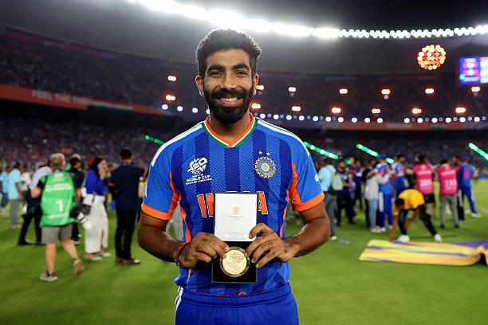
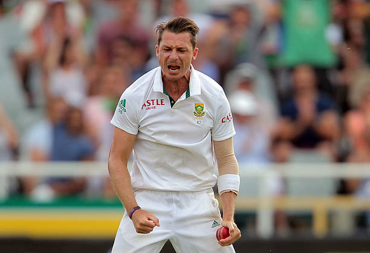
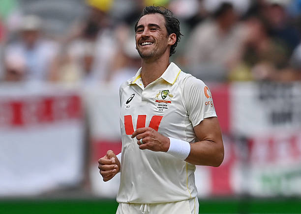
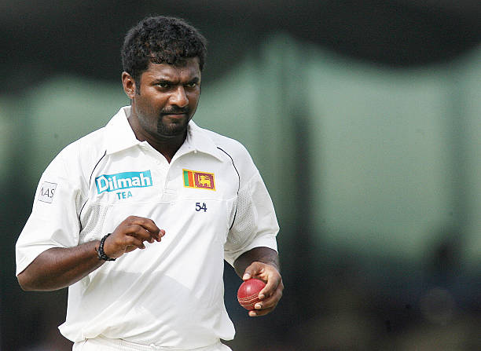
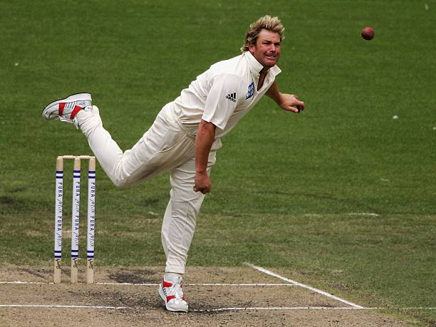
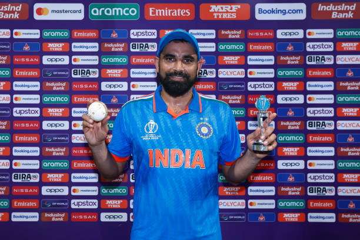
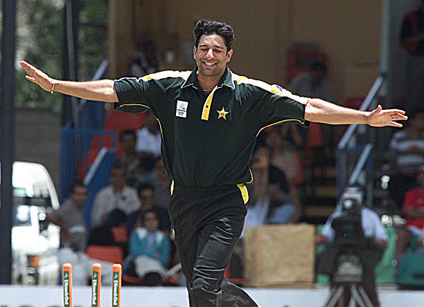
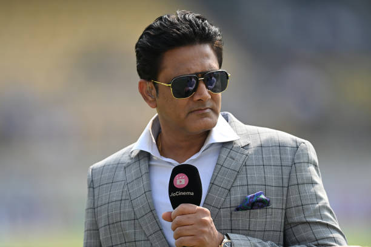
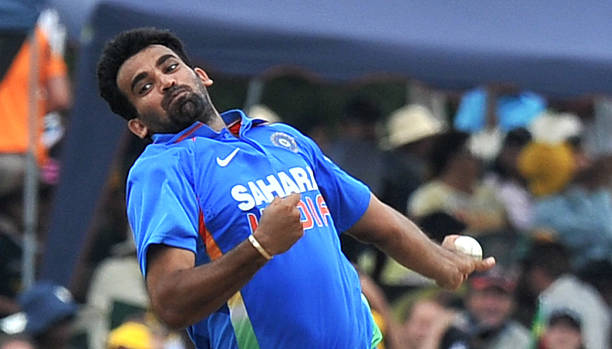
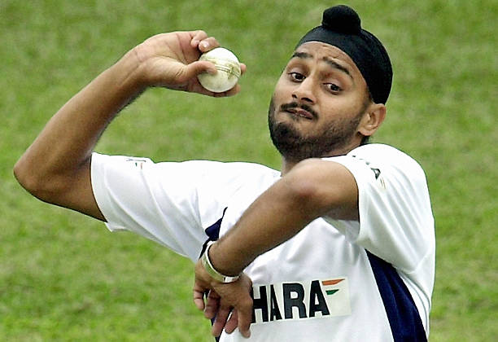

CRICKBOYZ
Website Created by: MAHIR CHAVDA
" THEY ARE NOT IN ANY PARTICULAR ORDER, THEY ARE ALL GREAT PLAYERS."
1.JASPRIT BUMRAH

Full Name: Jasprit Jasbirsingh Bumrah
Date of Birth: 6 December 1993
Birthplace: Gujarat, India
Nationality: Indian
Role: Fast Bowler
Bowling Style: Right-arm fast
Nickname: Boom Boom Bumrah
- Bumrah is one of the best fast bowlers in the world.
- He is famous for his deadly yorkers.
- He has a unique bowling action.
- Bumrah performs well in all formats.
- He is a key player for India.
- He has taken many match-winning wickets.
- He is known for calm mindset under pressure.
2.Dale Steyn

Full Name: Dale william Steyn
Date of Birth: 27 June 1983
Birthplace: South Africa
Nationality: South African
Role: Fast Bowler
Bowling Style: Right-arm fast
Nickname: Steyn Gun
- Dale Steyn is one of the fastest bowlers.
- He had excellent swing and pace.
- Steyn dominated Test cricket.
- He took over 400 Test wickets.
- He was very aggressive.
- He is a South African legend.
- He is known for fiery spells.
3.Mitchell Starc

Full Name: Mitchell Aaron Starc
Date of Birth: 30 January 1990
Birthplace: Australia
Nationality: Australian
Role: Fast Bowler
Bowling Style: Left-arm fast
Nickname: Starc
- Starc is one of the fastest bowlers.
- He is famous for yorkers and pace.
- He has dominated World Cups.
- Starc has taken many wickets.
- He swings the ball at high speed.
- He is a match-winner for Australia.
- He is one of the best left-arm pacers.
4.Muttiah Muralitharan

Full Name: Muttiah Muralitharan
Date of Birth: 17 April 1972
Birthplace: Sri Lanka
Nationality: Sri Lankan
Role: Spin Bowler
Bowling Style: Right-arm off spin
Nickname: Murali
- Muralitharan is the highest wicket-taker.
- He took 800 Test wickets.
- He had a unique bowling action.
- Murali was very consistent.
- He troubled all batsmen.
- He is a Sri Lankan legend.
- He is one of the greatest spinners ever.
5.Shane Warne

Full Name: Shane Keith Warne
Date of Birth: 13 September 1969
Birthplace: Australia
Nationality: Australian
Role: Spin Bowler
Bowling Style: Right-arm leg spin
Nickname: King of Spin
- Shane Warne is one of the greatest leg spinners.
- He took over 700 Test wickets.
- He bowled the famous "Ball of the Century".
- Warne was very skillful.
- He was a match-winner.
- He played a key role in World Cups.
- He is an Australian legend.
6. MOHAMMED SHAMI

Full Name: Mohammed Shami Ahmed
Date of Birth: 3 September 1990
Birthplace: Uttar Pradesh, India
Nationality: Indian
Role: Fast Bowler
Bowling Style: Right-arm fast
Nickname: Shami
- Shami is known for his speed and swing.
- He is one of India’s best wicket-takers.
- He has taken many five-wicket hauls.
- Shami is deadly in World Cups.
- He bowls accurate seam deliveries.
- He is a match-winner for India.
- He performs well under pressure.
7.Wasim Akram

Full Name: Wasim Akram
Date of Birth: 3 June 1966
Birthplace: Pakistan
Nationality: Pakistani
Role: Fast Bowler
Bowling Style: Left-arm fast
Nickname: Sultan of Swing
- Wasim Akram is one of the greatest fast bowlers.
- He was master of swing bowling.
- He took over 900 international wickets.
- He played a key role in 1992 World Cup.
- Akram was deadly in death overs.
- He could reverse swing the ball.
- He is a cricket legend.
8. ANIL KUMBLE

Full Name: Anil Kumble
Date of Birth: 17 October 1970
Birthplace: Bangalore, India
Nationality: Indian
Role: Spin Bowler
Bowling Style: Right-arm leg spin
Nickname: Jumbo
- Kumble is one of the greatest spin bowlers.
- He took over 600 Test wickets.
- He once took all 10 wickets in an innings.
- Kumble was very consistent.
- He played many match-winning spells.
- He was also captain of India.
- He is a cricket legend.
9. ZAHEER KHAN

Full Name: Zaheer Khan
Date of Birth: 7 October 1978
Birthplace: Maharashtra, India
Nationality: Indian
Role: Fast Bowler
Bowling Style: Left-arm fast
Nickname: Zak
Zaheer Khan was India’s leading fast bowler.
He played a key role in 2011 World Cup.
He was known for swing bowling.
He took many important wickets.
Zaheer was very experienced.
He led the bowling attack.
He is one of India’s best pacers.
10. HARBHAJAN SINGH

Full Name: Harbhajan Singh
Date of Birth: 3 July 1980
Role: Off Spin Bowler
- Harbhajan Singh is one of India's most successful spin bowlers.
- He was the first Indian to take a Test hat-trick.
- He played a key role in many historic matches.
11. Brett Lee

Full Name: Brett Lee
Date of Birth: 8 November 1976
Birthplace: Wollongong, Australia
Nationality: Australian
Role: Fast Bowler
Bowling Style: Right-arm fast
Nickname: Binga
- Brett Lee was one of the fastest bowlers in cricket history, consistently bowling above 150 km/h.
- He was a key part of Australia’s dominant team during the early 2000s.
- He was known for his aggressive bowling and ability to take wickets quickly.
- He performed exceptionally well in both Tests and ODIs.
- He was also a useful lower-order batsman.
- He played many match-winning spells under pressure.
- He is regarded as one of Australia’s finest fast bowlers.
12. Waqar Younis

Full Name: Waqar Younis
Date of Birth: 16 November 1971
Birthplace: Vehari, Pakistan
Nationality: Pakistani
Role: Fast Bowler
Bowling Style: Right-arm fast
Nickname: Burewala Express
- Waqar Younis was famous for his deadly reverse swing, making him extremely dangerous in the later stages of an innings.
- He formed a legendary bowling partnership with Wasim Akram.
- He took over 400 Test wickets with an excellent strike rate.
- He was known for his toe-crushing yorkers.
- He played a key role in Pakistan’s success during the 1990s.
- He was aggressive and fearless with the ball.
- He is considered one of the greatest fast bowlers.
13. James Anderson

Full Name: James Michael Anderson
Date of Birth: 30 July 1982
Birthplace: Burnley, England
Nationality: English
Role: Fast Bowler
Bowling Style: Right-arm fast-medium
Nickname: Jimmy
- Anderson is one of the greatest swing bowlers in cricket history.
- He is England’s highest wicket-taker in Test cricket.
- He is known for his ability to move the ball both ways.
- He has performed consistently over a long career.
- He is especially dangerous in English conditions.
- He has taken wickets against all major teams.
- He is regarded as a modern bowling legend.
14. Stuart Broad

Full Name: Stuart Christopher John Broad
Date of Birth: 24 June 1986
Birthplace: Nottingham, England
Nationality: English
Role: Fast Bowler
Bowling Style: Right-arm fast-medium
Nickname: Broady
- Broad was known for his ability to produce devastating spells, especially in Test cricket where he could change the game within a few overs.
- He formed one of the most successful bowling partnerships with James Anderson for England.
- He famously took 8 wickets for just 15 runs against Australia in the Ashes.
- He was very effective in home conditions with swing and seam movement.
- He played a key role in England’s Ashes victories.
- He was a consistent wicket-taker throughout his career.
- He is regarded as one of England’s greatest fast bowlers.
15. Shoaib Akhtar

Full Name: Shoaib Akhtar
Date of Birth: 13 August 1975
Birthplace: Rawalpindi, Pakistan
Nationality: Pakistani
Role: Fast Bowler
Bowling Style: Right-arm fast
Nickname: Rawalpindi Express
- Shoaib Akhtar was one of the fastest bowlers in cricket history, holding the record for the fastest delivery ever bowled.
- He was known for his extreme pace and ability to trouble even the best batsmen.
- He delivered match-winning performances with aggressive bowling spells.
- He was a key player for Pakistan in big tournaments.
- He could generate bounce and speed on any pitch.
- He was fearless and always attacked the batsmen.
- He is considered one of the most exciting fast bowlers ever.
16. Michael Holding

Full Name: Michael Anthony Holding
Date of Birth: 16 February 1954
Birthplace: Kingston, Jamaica
Nationality: West Indian
Role: Fast Bowler
Bowling Style: Right-arm fast
Nickname: Whispering Death
- Holding was known for his smooth and silent run-up, earning him the nickname “Whispering Death”.
- He was part of the fearsome West Indies fast bowling attack.
- He delivered devastating spells with pace and accuracy.
- He played a key role in West Indies’ dominance.
- He was very effective in both Tests and ODIs.
- He troubled batsmen with bounce and speed.
- He is regarded as one of the greatest fast bowlers.
17. Andy Roberts

Full Name: Anderson Montgomery Everton Roberts
Date of Birth: 29 January 1951
Birthplace: Antigua
Nationality: West Indian
Role: Fast Bowler
Bowling Style: Right-arm fast
Nickname: Andy
- Roberts was one of the pioneers of the West Indies fast bowling era.
- He was known for his intelligence and ability to vary pace cleverly.
- He used bouncers effectively to surprise batsmen.
- He was very difficult to score against.
- He played a key role in West Indies’ success.
- He delivered match-winning spells.
- He is a legendary fast bowler.
18. Curtly Ambrose

Full Name: Curtly Elconn Lynwall Ambrose
Date of Birth: 21 September 1963
Birthplace: Antigua
Nationality: West Indian
Role: Fast Bowler
Bowling Style: Right-arm fast
Nickname: Curtly
- Ambrose was known for his incredible accuracy and consistency in line and length.
- He delivered devastating spells that could destroy batting line-ups.
- He famously took 7 wickets for 1 run in a Test match.
- He was part of the dominant West Indies team.
- He maintained pressure on batsmen with tight bowling.
- He rarely showed emotion on the field.
- He is regarded as one of the greatest fast bowlers.
19. Malcolm Marshall

Full Name: Malcolm Denzil Marshall
Date of Birth: 18 April 1958
Birthplace: Bridgetown, Barbados
Nationality: West Indian
Role: Fast Bowler
Bowling Style: Right-arm fast
Nickname: Marshall
- Marshall was one of the most complete fast bowlers, combining pace, swing, and accuracy with exceptional skill.
- He played a key role in the dominant West Indies team during the 1980s.
- He had the ability to trouble batsmen on any pitch in any condition.
- He took over 370 Test wickets with an outstanding average.
- He was known for his intelligence and adaptability as a bowler.
- He delivered match-winning performances consistently.
- He is regarded as one of the greatest fast bowlers in history.
20. Joel Garner

Full Name: Joel Garner
Date of Birth: 16 December 1952
Birthplace: Barbados
Nationality: West Indian
Role: Fast Bowler
Bowling Style: Right-arm fast
Nickname: Big Bird
- Garner was known for his exceptional height, which allowed him to generate steep bounce and trouble batsmen.
- He was deadly in limited overs cricket with his accurate yorkers.
- He was part of the legendary West Indies fast bowling attack.
- He maintained tight control over his line and length.
- He delivered match-winning spells in crucial matches.
- He was very difficult to score against.
- He is considered one of the most effective fast bowlers.
21. Glenn McGrath

Full Name: Glenn Donald McGrath
Date of Birth: 9 February 1970
Birthplace: Dubbo, Australia
Nationality: Australian
Role: Fast Bowler
Bowling Style: Right-arm fast-medium
Nickname: Pigeon
- McGrath was known for his incredible accuracy and discipline, consistently hitting the same line and length.
- He was one of Australia’s most successful bowlers in both Tests and ODIs.
- He played a key role in multiple World Cup victories for Australia.
- He was very effective against top batsmen.
- He built pressure and forced mistakes from batsmen.
- He was a consistent wicket-taker.
- He is regarded as one of the greatest fast bowlers.
22. Shaun Pollock

Full Name: Shaun Maclean Pollock
Date of Birth: 16 July 1973
Birthplace: Port Elizabeth, South Africa
Nationality: South African
Role: All-rounder
Bowling Style: Right-arm fast-medium
Nickname: Polly
- Pollock was known for his accuracy and ability to swing the ball both ways.
- He was one of South Africa’s most reliable bowlers.
- He contributed significantly as an all-rounder with both bat and ball.
- He maintained a very economical bowling style.
- He played many match-winning performances.
- He was a consistent performer throughout his career.
- He is regarded as one of South Africa’s great cricketers.
23. Allan Donald

Full Name: Allan Anthony Donald
Date of Birth: 20 October 1966
Birthplace: Bloemfontein, South Africa
Nationality: South African
Role: Fast Bowler
Bowling Style: Right-arm fast
Nickname: White Lightning
- Donald was known for his extreme pace and aggressive bowling style.
- He was South Africa’s leading fast bowler during the 1990s.
- He delivered many match-winning spells.
- He was feared by batsmen for his speed and bounce.
- He played a key role in South Africa’s success.
- He was highly competitive on the field.
- He is regarded as one of the fastest bowlers ever.
24. Tim Southee

Full Name: Timothy Grant Southee
Date of Birth: 11 December 1988
Birthplace: Whangarei, New Zealand
Nationality: New Zealander
Role: Fast Bowler
Bowling Style: Right-arm fast-medium
Nickname: Tim
- Southee is known for his ability to swing the ball, especially in helpful conditions.
- He has been a consistent performer for New Zealand in all formats.
- He has taken many important wickets in international cricket.
- He contributes as a useful lower-order batsman as well.
- He plays a key role in New Zealand’s bowling attack.
- He has delivered match-winning performances.
- He is one of New Zealand’s experienced bowlers.
25. Trent Boult

Full Name: Trent Alexander Boult
Date of Birth: 22 July 1989
Birthplace: Rotorua, New Zealand
Nationality: New Zealander
Role: Fast Bowler
Bowling Style: Left-arm fast-medium
Nickname: Boult
- Boult is known for his deadly swing bowling, especially with the new ball.
- He has taken wickets consistently in all formats of the game.
- He is one of the leading wicket-takers in World Cup tournaments.
- He forms a strong bowling partnership with Tim Southee.
- He can trouble even the best batsmen with his movement.
- He delivers match-winning spells regularly.
- He is one of the best modern fast bowlers.